Oamishirasato, Chiba: things to do, food and stays
Oamishirasato · Chiba
Oamishirasato
Highlighted on the Chiba map.

Stay
BEST SPA 99
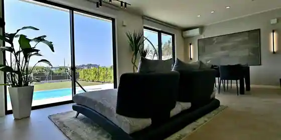
BEST SPA 99
桜ホテル 大網店
Sakura Hotel Oami
Hotel in Tokomakomi, Oamishirasato with business travelers; 1-minute walk from Jroami Station.
はなざわ5
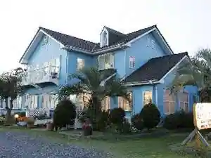
Hanazawa 5
エンヂ荘
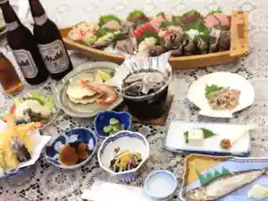
Enji So
KandoStay 九十九里NAGIテラス
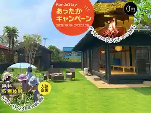
KandoStay Kujukuri NAGI Terrace
山中荘
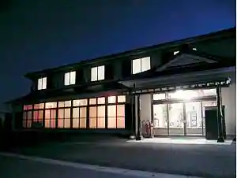
Sanchu So
Inn in Shitenkiotsu, Oamishirasato with business travelers and groups.
Dining
古民家ヌードゥル 黒揚羽森住
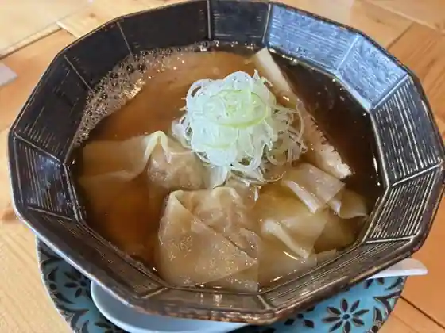
Ko Minka Nudouru Kuroageha Morisumi
イヤサカ
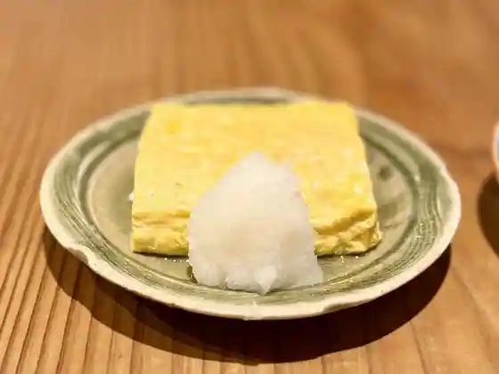
Iyasaka
手打ちうどんZ
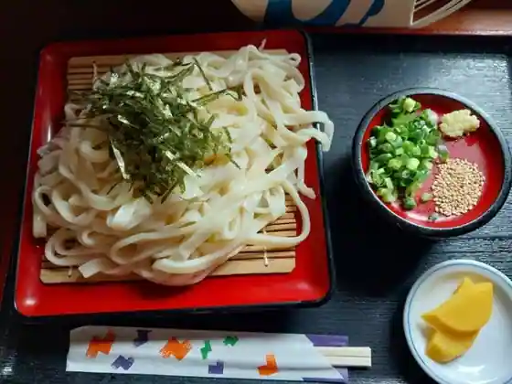
Teuchi Chiudon Z
The Rising Sun Coffee 大網店
The Rising Sun Coffee Oami
ブーランジェリー ソラハナ
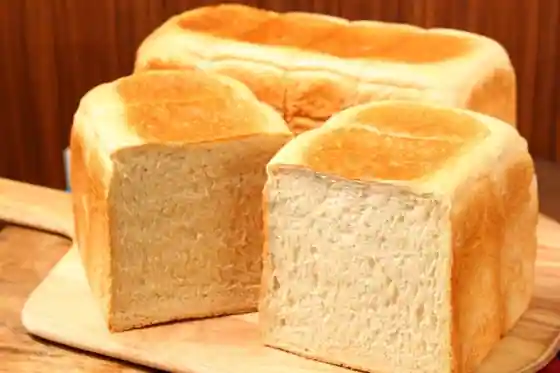
Buranjieri Sorahana
恵比寿ブタメン
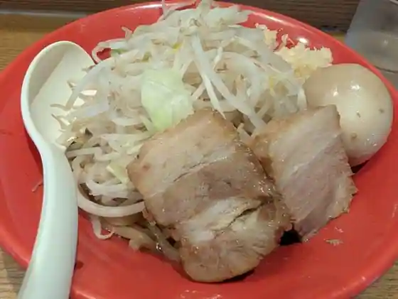
Ebisu Butamen
Cafe DRAGON
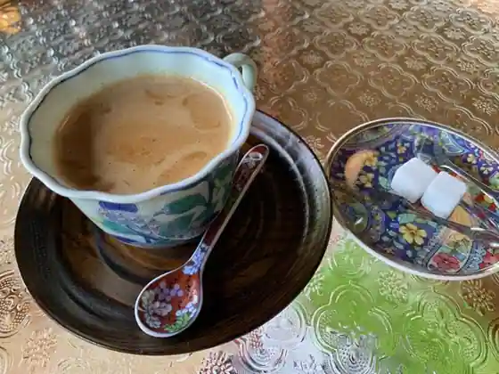
Cafe DRAGON
Boulangerie 粉桜
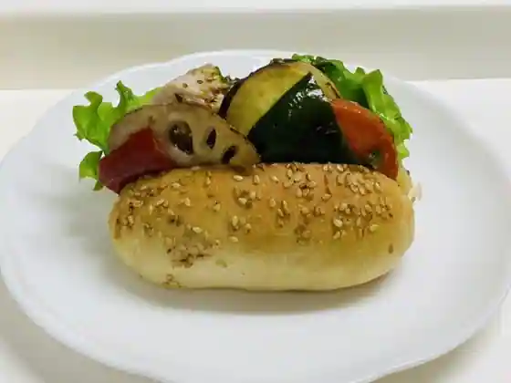
Boulangerie Kona Sakura
浜茶屋 協栄
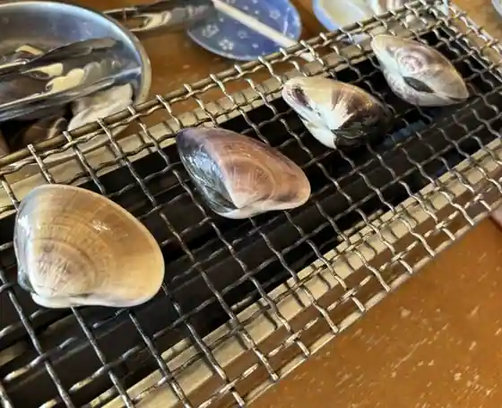
Hama Chaya Kyoei
コナノスミカ パンとおやつ
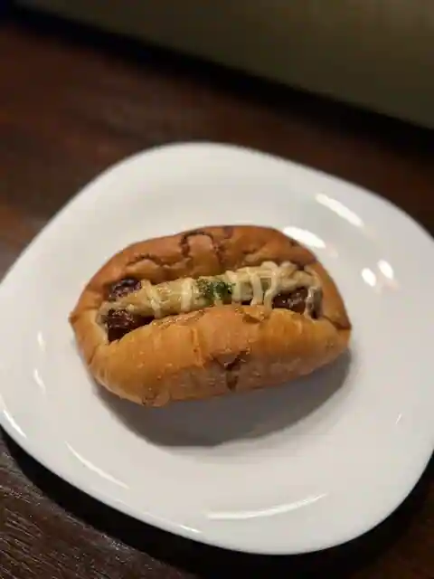
Konanosumika Bakery Toyatsu
季美の森ゴルフ倶楽部
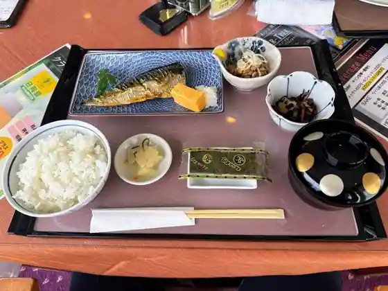
Ki Bi No Mori Gorufu Kurabu
和くら
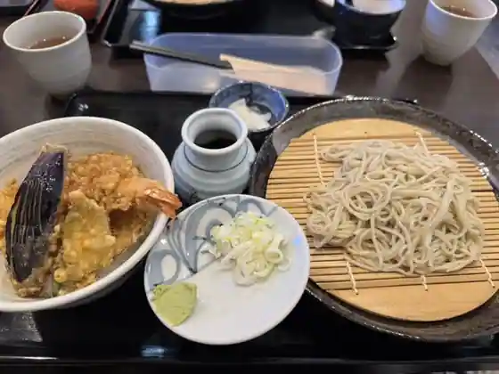
Wa Kura
一軒家ダイニング わいわい
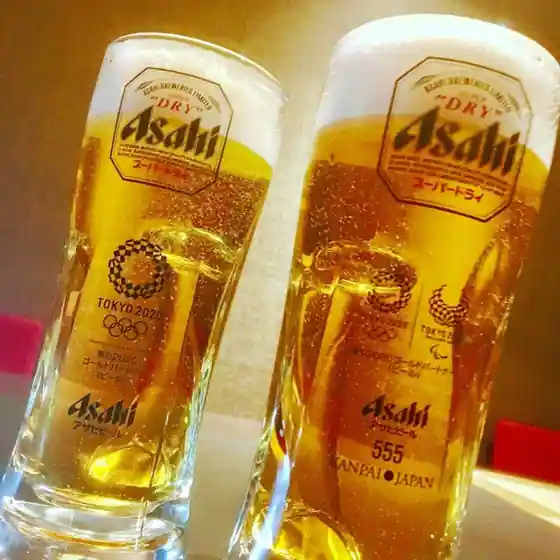
Ikkenya Dining Waiwai
台湾料理 海林
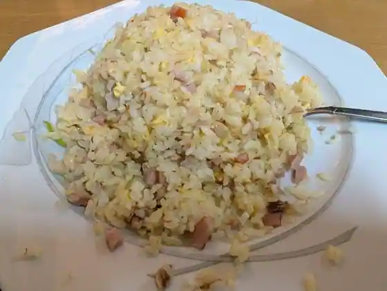
Taiwan Ryori Umi Hayashi
ごちそう中華オキヤマ
Gochiso Chuka Okiyama
ルッツェルン エム ハヤシ
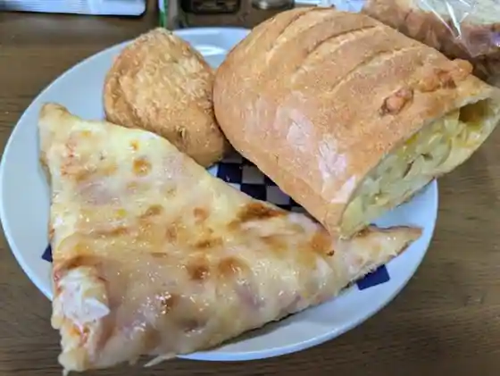
Ruttsuerun Emu Hayashi
ミツイクレープ
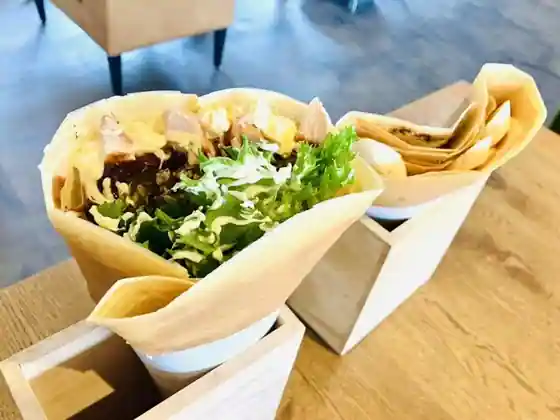
Mitsuikurepu
鉄人
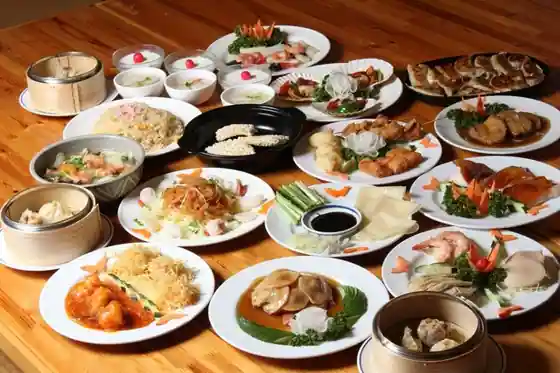
Tetsujin
ラーメンみたけ
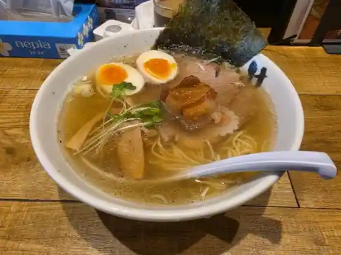
Ramen Mitake
kitchen HALE
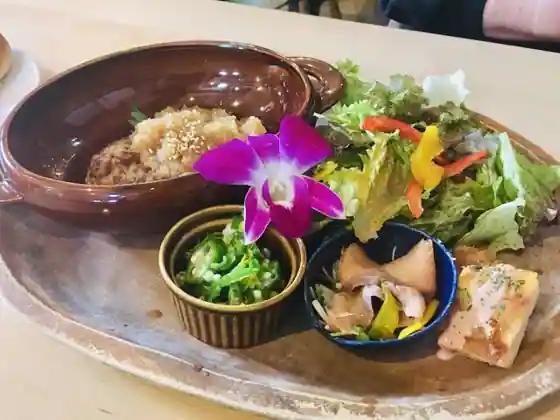
kitchen HALE
EL CHAVO
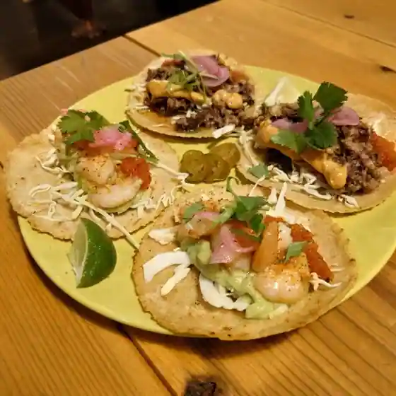
EL CHAVO
海鮮和食 お肴ぬこ
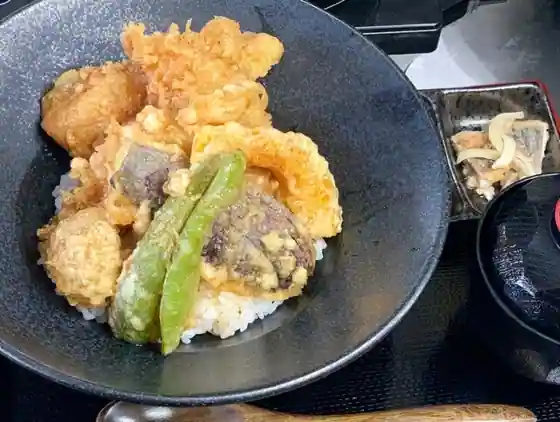
Kaisen Washoku O Sakana Nuko
ブーランジェリー ヴィー
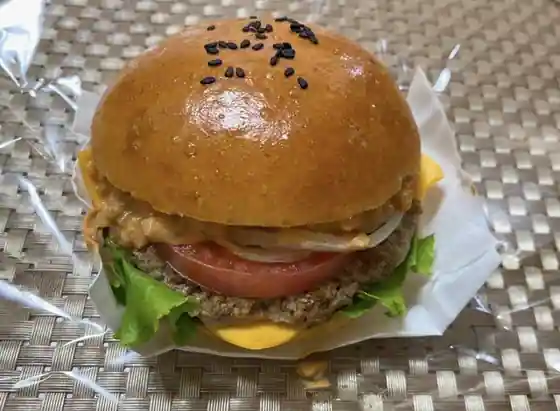
Buranjieri Vi
古民家食堂もちづき
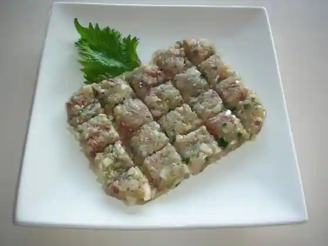
Ko Minka Shokudo Mochizuki
Sights
Shiro Sato Coast (Shiro Sato Beach)
Konaka Ike Park

Toeda Forest

Sambu Midori no Kaze Oami Mise